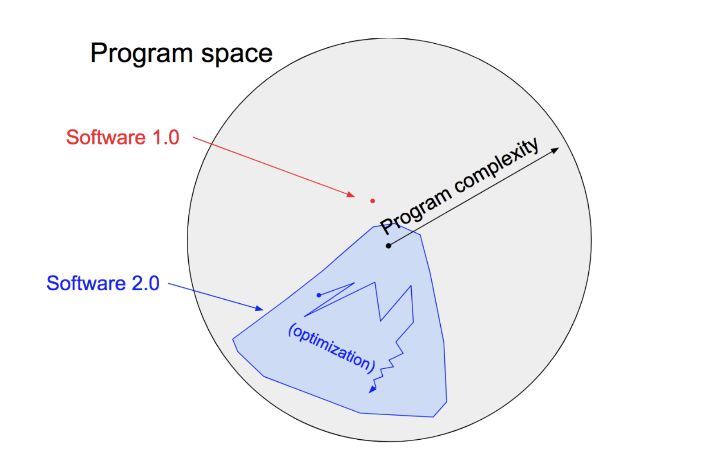

Machine Learning#
What exactly is Machine Learning?#
In what follows, we will first approach machine learning from a historical perspective. It all started in the early 50s in the last century with a model of brain cell interaction in the book The Organization of Behaviour by Donald Hebb. Heeb’s ideas about how the brain works were groundbreaking.
Hebb wrote,
“When one cell repeatedly assists in firing another, the axon of the first cell develops synaptic knobs (or enlarges them if they already exist) in contact with the soma of the second cell.”
If we translate Hebb’s ideas to artificial neurons, his model can be described as a way of altering the relationships between neurons: If two neurons fire at the same time, then the relationship between the two neurons strengthens, otherwise it decreases.
The term Machine Learning was already used by Arthur Samuel between 1952 and 1959. At that time, he investigated the question of whether a computer can be enabled to do something without explicit instructions. Is a computer able to learn? That question leads to the first formal definition of machine learning:
Definition Arthur Samuel (1959):
Machine Learning is the field of study that gives computers the ability to learn without explicity programmed.
An insight into his work is provided by his article Some Studies in Machine Learning Using the Game of Checkers.
In 1957 Rosenblatt introduced the Perceptron. He combined Donald Hebb’s model of brain cell interaction with Arthur Samuel’s machine learning efforts and created the perceptron, a machine for image recognition.
Several decades later, Tom Mitchel specified machine learning in his 1997 definition:
Definition Tom Mitchell (1997)
Machine Learning is the science that is
“concerned with the question of how to construct computer programs that automatically improve with experience,”. (Mitchell, 1997)
“A computer program is said to learn from experience E with respect to some class of tasks T and performance measure P, if its performance at tasks in T, as measured by P, improves with experience E.” (Mitchel 1997)
The essence of Machine Learning#
Building on this, Yaser Abu-Mostafa describes the essence of machine learning very impressively in his Machine Learning lecture from 2012.
Machine Learning is feasilble when:
A pattern exists.
And we are not able to pin it down. We do not know the maths or rules behind that pattern.
But we have a lot of meaningful data or observations that can be used to learn the hidden pattern.

Learning from data can be seen from a probabilistic or an numerical analytic perspective.
Software 2.0#
Andrej Karpathy introduced the term Software 2.0 in 2017.
He refers to so-called neural networks, which are models from Deep Learning (we will get to know later):
“they represent the beginning of a fundamental shift in how we write software. They are Software 2.0.”
He distinguishes software into software 1.0 and software 2.0. In software 1.0 we create programs by programming instructions in the common programming languages C, C++, C#, Java, …, which is what software developers do every day. In his point of view, software 1.0 has a very low complexity, because we have to be able to describe its complexity explicitly in instructions. On the other hand, software 2.0 allows us to learn relationships that have such a high complexity that we cannot program them explicitly in instructions. we can not make them explicit:
“In contrast, Software 2.0 can be written in much more abstract, human unfriendly language, such as the weights of a neural network. No human is involved in writing this code because there are a lot of weights (typical networks might have millions)…”
In software 2.0 we do not know the rules and cannot write them down explicitly as instructions. Software 2.0 learns its rules implicitly (by adjusting the weights of the neural network - we will come to that later).

Our Building Blocks for Machine Learning#
To use Arthur Samuel’s words, our goal in this lecture is to understand how to enable a computer to learn. To do this, we obviously need three elementary building blocks:
we start with data.
then we need a parameterized model that can explain the data, given an appropriate choice of parameters.
at least an evaluation procedure, the loss function, that allows us to adjust the parameters of our model.
In the next section we will formulate the learning problem in the language of math.